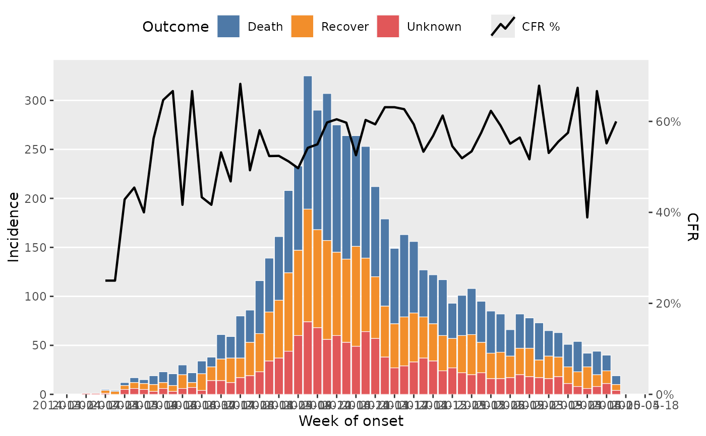

Helper function to plot epidemic curves with ggplot2 with options for grouping data, facets and proportion lines.
Usage
plot_epicurve(
df,
date_col,
group_col = NULL,
facet_col = NULL,
prop_col = NULL,
prop_numer = NULL,
prop_denom = "non_missing",
prop_line_colour = "black",
prop_line_size = 0.8,
floor_date_week = FALSE,
label_weeks = FALSE,
week_start = 1,
date_breaks,
date_labels = waiver(),
date_max = NULL,
sec_date_axis = FALSE,
facet_nrow = NULL,
facet_ncol = NULL,
facet_scales = "fixed",
facet_labs = ggplot2::label_wrap_gen(width = 25),
facet_lab_pos = "top",
group_na_colour = "grey",
title = waiver(),
subtitle = waiver(),
date_lab = waiver(),
y_lab = waiver(),
group_lab = waiver(),
prop_lab = NULL
)Arguments
- df
un-aggregated dataframe with a minumum of a date column with a date or POSIX class
- date_col
date variable to plot incidence with. Must be provided.
- group_col
optional grouping variable to be applied to the fill aesthetic of columns
- facet_col
optional faceting variable to split chart into small multiples
- prop_col
optional variable to be used to plot a proportion line on top of the epicurve
- prop_numer
value(s) in the
prop_colvariable as a single value or vector to be used to calculate the numerator of the proportion calculation- prop_denom
value(s) in the
prop_colvariable as a single value or vector to be used to calculate the denominator of the proportion calculation. default "non_missing" will take the sum of all non-missing values in the column.- prop_line_colour
colour of the proportion line. defaults to "red"
- prop_line_size
width of the proportion line. defaults to 0.8
- floor_date_week
should
date_coldates be floored to the Monday of the ISO week they fall in? defaults to TRUE- label_weeks
label primary date axis with week numbers? defaults to TRUE
- week_start
day of week defined as the start of the week as integer 1-7 (Monday = 1, Sunday = 7). defaults to 1 (ISO week standard)
- date_breaks
date break intervals passed to
ggplot2::scale_x_date. defaults to "2 weeks"- date_labels
base::strptimedate label code passed toggplot2::scale_x_date. defaults to "\%V" (ISO Week)- date_max
force a date axis max date. Useful for when a week has passed with no incidence and you want to show this on the plot. Setting date_max to the current week will force the date axis to show this week with no incidence.
- sec_date_axis
plot a secondary date axis using default calculated ggplot2 date breaks and labels? defaults to FALSE
- facet_nrow
nrow argument passed to
ggplot2::facet_wrap- facet_ncol
ncol argument passed to
ggplot2::facet_wrap- facet_scales
value for the
scalesargument passed toggplot2::facet_wrap. Default tofixed.- facet_labs
facet labeller argument passed to
ggplot2::facet_wrap. Defaults tolabel_wrap_gen(width = 25).- facet_lab_pos
facet label position argument passed to strip.position in
ggplot2::facet_wrap. defaults to "top". Options arec("top", "bottom", "left", "right")- group_na_colour
colour for missing values in
group_col. defaults to "grey"- title
optional title for the plot
- subtitle
optional subtitle for the plot
- date_lab
optional label for the date axis. defaults to
date_colname if not provided- y_lab
optional label for the Y axis. defaults to
nif not provided- group_lab
optional label for the group legend. defaults to
group_colname if not provided- prop_lab
label for the proportion line. There is no default so this should be provided when plotting proportion lines
Examples
library(dplyr)
df_ebola <- dplyr::as_tibble(outbreaks::ebola_sim_clean$linelist)
df_ebola |>
dplyr::mutate(outcome = forcats::fct_explicit_na(outcome, "Unknown")) |>
plot_epicurve(
date_col = date_of_onset,
group_col = outcome,
prop_col = outcome,
prop_numer = "Death",
prop_denom = c("Death", "Recover"),
floor_date_week = TRUE,
date_breaks = "2 weeks",
sec_date_axis = TRUE,
date_lab = "Week of onset",
y_lab = "Incidence",
group_lab = "Outcome",
prop_lab = "CFR"
)
#> Warning: There was 1 warning in `dplyr::mutate()`.
#> ℹ In argument: `outcome = forcats::fct_explicit_na(outcome, "Unknown")`.
#> Caused by warning:
#> ! `fct_explicit_na()` was deprecated in forcats 1.0.0.
#> ℹ Please use `fct_na_value_to_level()` instead.
#> Warning: Returning more (or less) than 1 row per `summarise()` group was deprecated in
#> dplyr 1.1.0.
#> ℹ Please use `reframe()` instead.
#> ℹ When switching from `summarise()` to `reframe()`, remember that `reframe()`
#> always returns an ungrouped data frame and adjust accordingly.
#> ℹ The deprecated feature was likely used in the epivis package.
#> Please report the issue at <https://github.com/epicentre-msf/epivis/issues>.
#> Warning: Removed 4 rows containing missing values or values outside the scale range
#> (`()`).
